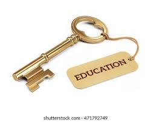

Education is the process of learning knowledge, skills, values, beliefs, and habits. It plays a crucial role in shaping individuals and societies. Through education, people gain the ability to think critically, solve problems, and make informed decisions. It is not limited to formal schooling but can also include learning from life experiences, family, and society.
Education can be classified into several types:
Education is important for many reasons. It empowers individuals with knowledge and skills, helps in personal and social development, and enables people to make meaningful contributions to society. Education also promotes equality, reduces poverty, and fosters economic growth.
In short, education is the foundation of human progress. It not only equips people with knowledge but also teaches values, ethics, and life skills. By providing access to education for everyone, societies can achieve growth, equality, and innovation.
Return Back